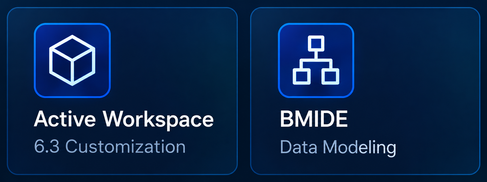
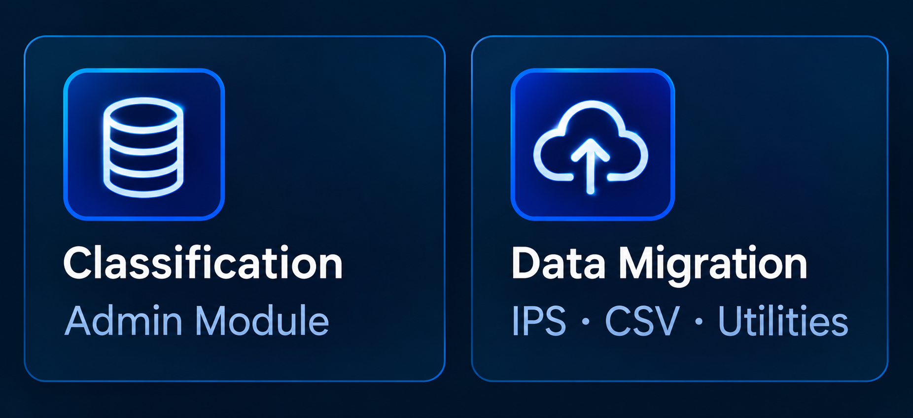
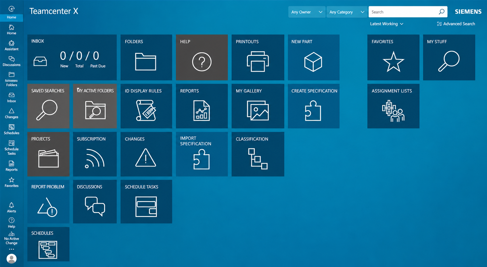

Teamcenter customization
ITK, C++, AOM, GRM, EPM, POM, workflows, ACLs, queries, and business logic.
I'm R Vishnuprasad, a Siemens Teamcenter specialist and Lead Developer with 4.7+ years in software engineering across server-side customization, Active Workspace, BMIDE data modeling, data migration, and enterprise CAD–PLM integration.
I enjoy solving the tricky problems that sit between engineering data, business rules, and the people who rely on them. That means making migrations dependable, workflows easier to follow, and Teamcenter customizations maintainable, not just making a feature work once, but making it reliable in day-to-day use.
I am a Siemens Teamcenter specialist and Lead Developer with 4.7+ years in software engineering, delivering end-to-end PLM solutions across ITK/C++ server customization, Active Workspace, BMIDE data modeling, and CAD–PLM integration (NX, Solid Edge, SolidWorks). I lead cross-functional teams, mentor developers, and work directly with customers and stakeholders. I also contribute to Teamcenter administration and support deployments across QA and sandbox environments. I migrated 10,000+ items to production with 100% accuracy. Siemens Teamcenter certified, with domain experience across automotive, electronics, and medical devices. Skilled in C, C++, Java, Python, JavaScript, SQL, and XML.
Understand the process. Model the data cleanly. Customize with intent. Build something people trust.
CLARITY · QUALITY · COLLABORATIONITK, C++, AOM, GRM, EPM, POM, workflows, ACLs, queries, and business logic.
Business object modeling, properties, rules, extensions, and lifecycle-aware data structures.
Web client customization, saved search experiences, stylesheets, and user-focused interfaces.
Data migration, CSV-driven workflows, validation, and CAD–PLM integration support.
Workflow Designer · Structure Manager · Classification Administration · Query Builder · Projects · Organization · ACLs · Change Management · Report Builder · XRT Editor
Agile · SDLC · Requirements Analysis · Test Planning & Execution · Customer Collaboration · Cross-functional Leadership
Automotive Manufacturing & Product Engineering · Automotive and Electronic Components · Medical Devices · IoT
NX · Solid Edge · SolidWorks
Showing all 3 featured projects.

BMIDE · DATA MODELINGConfigured custom item types, forms, LOVs, and business rules, including display, naming, GRM, and deep-copy rules, to support business-specific data and lifecycle needs.

DATA MIGRATION · VALIDATIONMigrated 10,000+ items to production with 100% accuracy, including item metadata, classification data, and related files using IPS data upload and custom utilities.

Delivered Active Workspace customization across icons, workspaces, custom commands, actions, and stylesheets, and developed custom queries to improve access to engineering data.
Build custom Teamcenter utilities, extensions, action and rule handlers using ITK (C/C++). Deliver Active Workspace UI customization, design 20+ workflows, configure BMIDE item types and business rules, and manage 100+ classification classes. Contribute to Teamcenter administration and support deployments across QA and sandbox environments.
Administration and deployment work includes stylesheets, DLLs/shared objects, workflows, ACLs, queries, classification, organization, preferences, and related modules using Deployment Center.
Led cross-functional sprint testing, developed and executed test plans, and coordinated with customers, business teams, and developers across Agile delivery. Migrated 10,000+ items to production with 100% accuracy using IPS data upload and custom utilities. Developed Active Workspace queries and delivered attribute mapping for NX, Solid Edge, and SolidWorks CAD–PLM integrations.
Designed and optimized MySQL queries to reduce data-fetch time, and contributed to database design and query execution planning with the team.
Developed an AI-driven concept to improve change impact analysis when an engineer modifies a part. The solution aims to identify affected items, assemblies, related documents, and downstream manufacturing impacts, helping engineers assess change consequences more efficiently.
Hindustan Institute of Technology · Anna University, Tamil Nadu
June 2018 - May 2022 · CGPA: 8.49 / 10 · First ClassI'm interested in meaningful engineering challenges and product-focused teams. Let's connect.